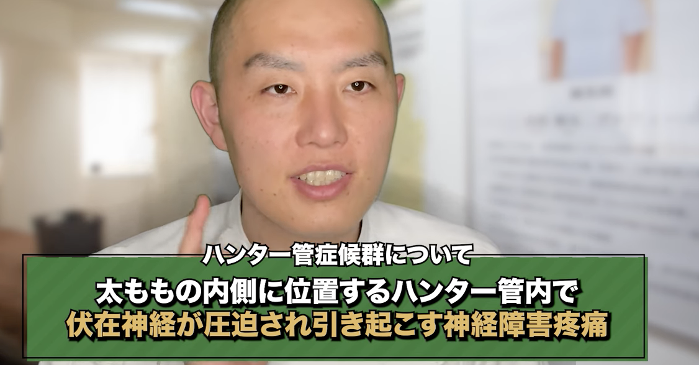
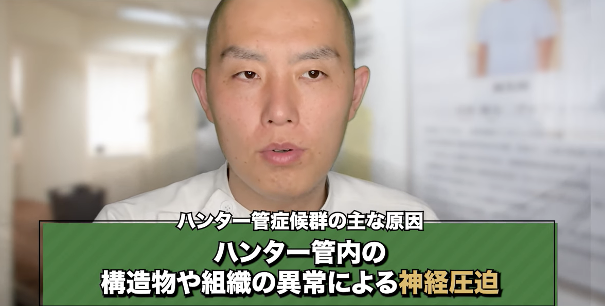
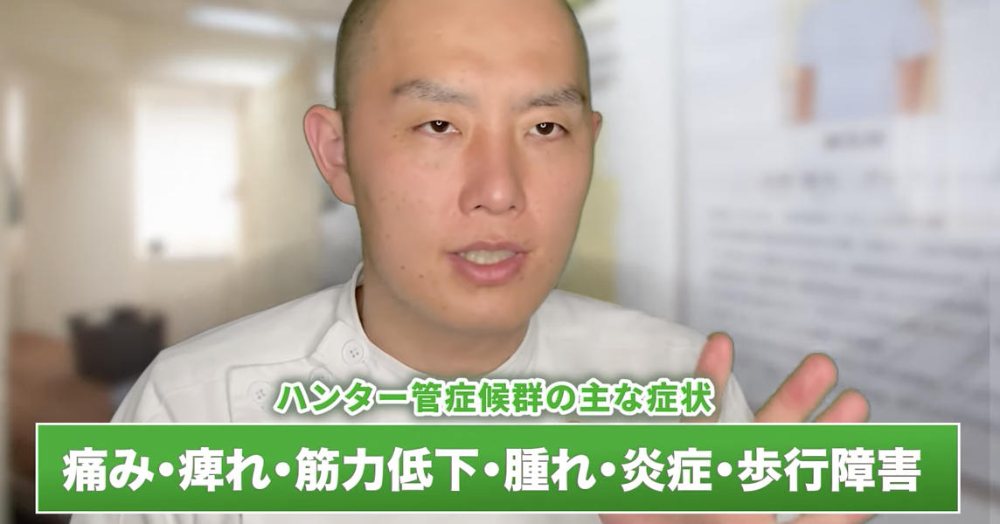
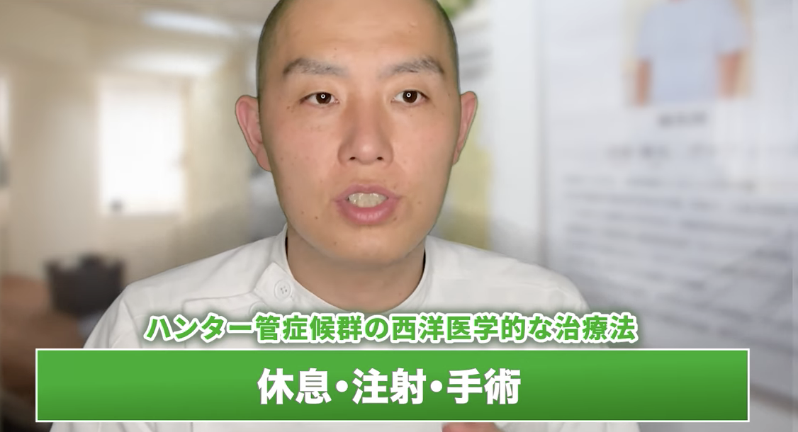
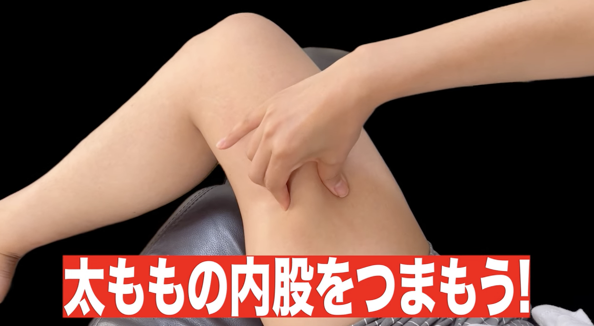
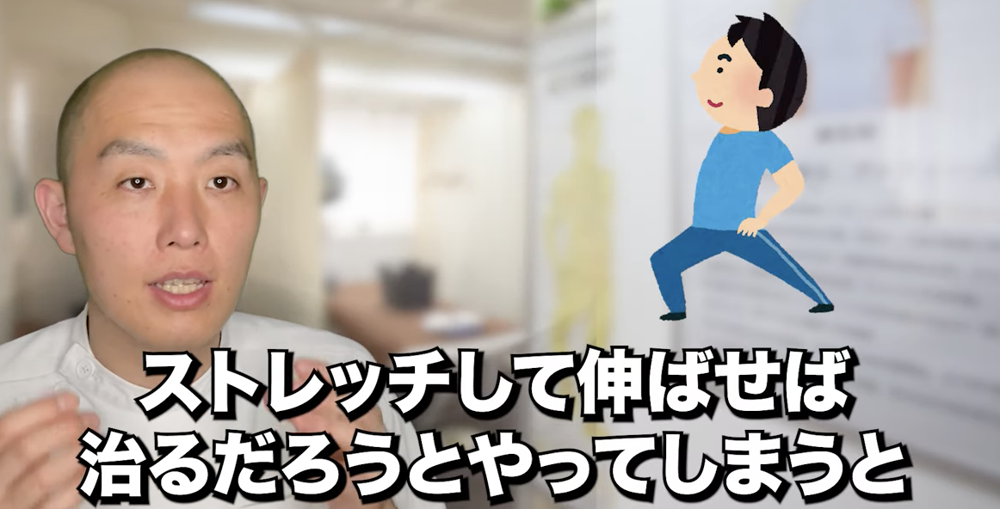

ハンター管症候群の鍼灸
太もも内側のハンター管で伏在神経が圧迫される障害。関連筋の過緊張を鍼灸で丁寧に緩めます。
まず知っておきたい要点と施術方針
太もも内側にあるハンター管（内転筋管：内側広筋・大内転筋・縫工筋・内転筋筋膜で構成）の中で感覚神経の伏在神経が圧迫されて起こる絞扼性神経障害です。筋トレのしすぎによる筋肥大や過剰な運動の反復、姿勢不良・体の使い方の誤りによる周囲筋の過緊張、衣服の締め付け、外傷、稀に腫瘍や嚢胞が原因となります。（公式解説）
このようなお悩みはありませんか？
- ✓膝の内側から脛・ふくらはぎの内側にかけてピリッと痛む
- ✓内くるぶし周りのしびれや感覚の鈍さがある
- ✓歩くときや立ち上がるとき、膝を伸ばすときに痛みが増す
- ✓変形性膝関節症やシンスプリントと言われたが改善しない
当院の施術アプローチ
院長YouTube解説・関連動画
ハンター管障害は伏在神経が圧迫されることで起こる絞扼障害

ハンター管症候群は、太ももの内側に位置するハンター管の中で伏在神経が圧迫されることによって起こる神経障害疼痛です。膝の内側の痛み、脛の内側の痛み、痺れ、筋力低下などが起こり、日常生活に大きな影響を及ぼします。
伏在神経は、ハンター管の中を通る神経で、感覚神経です。ハンター管症候群は膝痛と間違える人が多い症状です。見捨てられる症状の１つですが非常に多い症状です。
年配で膝の内側が痛いと言っている人はハンター管症候群の可能性があります。ハンター管症候群について説明してもわからない人も多いので説明しないことも多いです。
ハンター管の正式名称は内転筋管です。そのためハンター管症候群は、内転筋管症候群と呼ばれることもあります。
ハンター管は太ももの内側にあるトンネル状の空間で重要な血管や神経が通っています。ハンター管の構成は内側広筋、大内転筋、縫工筋、内転筋筋膜の４つの筋肉でできています。
・内側広筋
ハンター管の外壁を構成している。
・大内転筋
ハンター管の後壁を構成。
・縫工筋
ハンター管の前壁を構成。
・内転筋筋膜
ハンター管の１部分を構成している。
ハンター管内の血管と神経は、大腿動脈、大腿静脈、伏在神経です。３つ目の伏在神経が曲者でこの神経がハンター管内で圧迫されたりすると足の脛の内側周辺が痛くなったり痺れたりします。
ハンター管症候群の原因は、運動などによる筋肉の使い過ぎ

ハンター管症候群の主な原因はハンター管内の構造物や組織の異常による神経圧迫です。
１.筋肉のつけすぎ
筋トレしすぎて筋肉が大きくなります。筋肉のつけすぎによって圧迫されて膝下内側が痛むパターンで、当院で1番多いです。
２.腫瘍や嚢胞
腫瘍や嚢胞のパターンは当院では経験がありません。
３.外傷
４.過剰な運動の繰り返しの動作
1の筋肉のつけすぎと4の過剰な運動の繰り返しの動作は似ているところがあります。
ハンター管症候群の原因は、ほとんどの場合運動などによる筋肉の使い過ぎです。しかし、同じように運動をしていても、ハンター管症候群を発症する人もいれば発症しない人もいます。
ハンター管症候群と判断された人のほとんどは、体の使い方を間違っていたり、姿勢が悪かったりすることによって、長内転筋、内側広筋、縫工筋、大内転筋の共働筋や拮抗筋、連結連動する筋や筋膜が機能不全を起こしているということがわかっています。
長内転筋、内側広筋、縫工筋、大内転筋が過剰に緊張していることがハンター管症候群の発症に大きく関わっているのです。
他にも、タイツやスパッツなどによる締め付けやピッタリしているズボンや下着などによって内ももが圧迫されることが原因になることもあります。
筋肉の過度の使用:特定のスポーツや活動によって内側脛骨筋が過度に使われることが、筋肉や神経の圧迫につながることがあります。
筋肉の緊張や損傷:内側脛骨筋の緊張や損傷が、神経を圧迫し症状を引き起こすことがあります。
解剖学的変異:ハンター管の解剖学的な変異により、神経が圧迫されることがあります。
外傷や手術:膝や脚の外傷や手術が、ハンター管周辺の筋肉や神経に影響を及ぼすことがあります。
姿勢の問題:不適切な姿勢や、特定の姿勢を長時間続けることが、内側脛骨筋に過度のストレスを与え、神経を圧迫することがあります。
腫瘍や嚢胞:ハンター管周辺に腫瘍や嚢胞が発生することで、神経が圧迫されることがあります。
ふくらはぎの内側と内くるぶし周りに起こるしびれや痛み

ハンター管症候群の症状は、神経圧迫の程度や持続時間によって異なりますが、主に痛み、痺れ、筋力低下、腫れ、炎症、歩行障害です。
当院では、歩行障害の方はいますが、歩けなくなったというケースは見たことがありません。そこまで悪化せず多くの場合鍼灸では２〜3回で改善することが多いのです。
当院に来院した方で多い症状は、ピリッとした痛みで歩くたびに脛の内側が痛い、１ヶ月２ヶ月何もしていないのにずっと痛いという症状です。ハンター管症候群は慢性化しているケースが多いのです。
マッサージや整骨院、病院では、シンスプリントや疲労性脛骨膜炎、変形性膝関節症などと間違って判断されることも多いです。
痛みは、立ち上がる時や膝を伸ばす時に強くなります。膝の内側が痛いと感じる場合もあるため、膝の痛みと間違われることもあります。
脚の内側の痛み:脚の内側、特に膝から下の部分に痛みを感じることがあります。
しびれや感覚の低下:内側脛骨神経の圧迫により、脚の内側にしびれや感覚の低下が生じることがあります。
歩行時の不快感:歩行時に脚の内側に痛みや不快感を感じることがあります。
筋力の低下:関連する筋肉群の筋力が低下することがあります。
腫れや圧痛:ハンター管の領域が腫れたり、圧痛を伴ったりすることがあります。
運動制限:症状の重さによっては、脚の運動範囲が制限されることがあります。

ハンター管症候群の西洋医学の改善方法は、休息、注射、手術です。注射は、ステロイド注射や局所麻酔が行います。手術は、圧迫を解除するために内転筋筋膜の切除を行います。
ハンター管症候群で薬を使う場合は、消炎鎮痛剤や筋弛緩薬、ビタミン剤や血流を良くする効果のある薬を使います。電気を使ったりテーピングを行ったりすることもあります。
物理的な方法:専門家による指導のもと、筋肉のストレッチや筋力トレーニングが行われます。これにより、筋肉の緊張を和らげ、神経への圧迫を軽減することができます。
痛み管理:痛みや炎症を軽減するために、非ステロイド性抗炎症薬や鎮痛剤が使用されることがあります。
局所的な方法:症状が局所的に集中している場合、局所的な冷却や熱が効果的な場合があります。
活動の調整:症状の原因となる活動やスポーツを一時的に制限することで、症状の悪化を防ぎます。
装具の使用:圧迫を軽減するために、サポート用の装具やブレースを使用することがあります。
外科手術:薬や物理的な方法などで改善が見られない場合、外科手術を行うことがあります。手術では、圧迫している組織を除去し、神経の圧迫を緩和します。
・非ステロイド性抗炎症薬（NSAIDs）
効果: 痛みと炎症を和らげます。
例: イブプロフェン、ナプロキセンなど。
注意点: 長期使用は胃腸障害や腎臓への影響などの副作用を引き起こす可能性があるため、用法用量を守ることが重要です。
・鎮痛剤
効果: 軽度の痛みを和らげます。
例: アセトアミノフェン（パラセタモール）など。
注意点: アセトアミノフェンは肝臓に影響を与える可能性があるため、過剰摂取に注意が必要です。
・筋弛緩剤
効果: 筋肉の緊張を和らげることがあります。
注意点: 筋弛緩剤は眠気やめまいなどの副作用を引き起こす可能性があるため、使用時は慎重におこないましょう。
ハンター管症候群のセルフケア
ハンター管症候群は、程度が軽ければ非常に改善しやすいです。縫工筋、内側広筋、大内転筋、内転筋筋膜をほぐしてしまえば圧迫が取れて楽になります。

太ももの前側から内側にかけて皮膚を伸ばしましょう。この時にグリグリ押したくなりますが、神経が圧迫されて起こる症状のため圧迫することで症状は悪化してしまいます。
セルフケアでも筋肉の上に湿布を貼っても効かないため、内側広筋、大内転筋、縫工筋、内転筋筋膜をほぐすように太ももの内股をつまんで皮膚をぐいぐい伸ばしてください。
セルフケアは、1日3回朝昼晩５分ずつ行いましょう。軽い方はすぐ改善します。
当院では変形性膝関節症とシンスプリントとハンター管は全て同時に鍼をするため結果改善すれば良いという気持ちで施術を行っています。

セルフケアを行う上での注意点はストレッチは行ってはいけないということです。ストレッチで伸ばせば改善するだろうと行ってしまうと圧力が上がり症状が強くなります。
筋肉の中には筋肉の長さを感知するセンサーがあります。筋肉の長さを感知するセンサーは、これ以上引っ張られると切れてしまうという所で感知し、筋肉を守るために、筋肉を縮めようとします。
そのため、ストレッチを行い、過剰に緊張している筋肉を伸ばそうとすると、緊張して短くなっているセンサーが過敏に反応し、回外筋を縮めようとしてさらに緊張させてしまう可能性があります。
筋肉、骨のお悩みのツボ図解とセルフケア
実際の施術ではお一人おひとりの体質・症状に合わせて選穴しますが、筋骨格系疼痛（腰痛・関節痛・頸肩痛・坐骨神経痛）の臨床でよく用いられる代表的なツボの目安です。

📌 代表的なツボの詳細一覧表を開く（6穴） ▼
| ツボ名 | 位置の目安 | 主な狙い | セルフケアの注意点 |
|---|---|---|---|
| 腎兪（じんゆ） | へその高さの背骨（第2腰椎下）から指2本外側 | 慢性腰痛・腰背部の疲労緩和 | 強圧を避け温灸やカイロでの温熱ケアが安全 |
| 委中（いちゅう） | 膝裏の横ジワの中央 | 腰痛・坐骨神経痛・下肢後面の張り緩和 | 血管・神経が浅いため優しく押圧 |
| 環跳（かんちょう） | お尻の横のくぼみ（大転子と仙骨下端の間） | 坐骨神経痛・殿部〜大腿外側の放散痛ケア | テニスボール等の強押しは神経悪化に注意 |
| 陽陵泉（ようりょうせん） | 膝外側下方、腓骨頭の前下のくぼみ | 膝痛・こむら返り・全身の筋緊張緩和 | 総腓骨神経近接のためしびれが出る強押し禁止 |
| 風池（ふうち） | 後頭部の生え際、首の太い筋の外側のくぼみ | 頸肩痛・首こり・緊張型頭痛の緩和 | 頭を反らしすぎず心地よい強さでゆっくり |
| 肩井（けんせい） | 首の付け根（第7頸椎）と肩先を結ぶ中央 | 肩こり・頸肩部の重だるさ軽減 | 妊娠中は強い刺激を避ける。揉み返しに注意 |
国際査読論文の科学的エビデンス
国際的な医学データベース（PubMed・Cochrane等）で報告されている筋骨格系疼痛（腰痛・関節痛・頸肩痛・坐骨神経痛）領域の代表的な査読済み鍼灸研究をまとめています（標準治療との併用や研究上の限界を含めて正確に掲載）。
📚 査読論文データ・PubMed出典リンクを開く（4件） ▼
| 年・研究デザイン | 対象・規模 | 主な結果 | 限界・出典 |
|---|---|---|---|
| 2018年 IPDメタ解析 | 慢性筋骨格痛・頭痛 39 RCTs（n=20,827） | 全領域でシャム鍼・無治療比とも有意優位（P<0.001）、1年後も効果低下約15%で持続。 | 対照設定により効果量変動。 J Pain (PMID: 29198932) |
| 2020年 Cochraneレビュー | 慢性非特異的腰痛 33 RCTs（n=8,270） | 無治療比で直後疼痛（MD -20.32）と機能（SMD -0.53）が臨床的に有意改善。有害事象は軽微。 | 施術者盲検化不可・確実性は中等度〜非常に低。 Cochrane (PMID: 33306198) |
| 2024年 多施設RCT | 慢性坐骨神経痛 216名（6病院・52週追跡） | 4週時点の下肢痛VAS減少30.8mm vs 14.9mm（差-16.0mm, P<0.001）、52週後も持続。 | 中国3次病院限定・施術者盲検化不可。 JAMA Intern Med (PMID: 39401008) |
| 2016年 メタ解析 | 変形性膝関節症 10 RCTs | 短期（13週）で疼痛（WMD -1.24, p<0.001）と機能（p<0.001）が有意改善、26週も機能維持（p=0.016）。 | 試験間の異質性が高く運動療法併用が推奨。 JBJS Am (PMID: 27655986) |
参考文献・出典
- 銀座そうぜん鍼灸院「ハンター管症候群の公式解説ページ」
- 2018年 IPDメタ解析（慢性筋骨格痛・頭痛 39 RCTs（n=20,827））— J Pain (PMID: 29198932)
- 2020年 Cochraneレビュー（慢性非特異的腰痛 33 RCTs（n=8,270））— Cochrane (PMID: 33306198)
- 2024年 多施設RCT（慢性坐骨神経痛 216名（6病院・52週追跡））— JAMA Intern Med (PMID: 39401008)
- 2016年 メタ解析（変形性膝関節症 10 RCTs）— JBJS Am (PMID: 27655986)
よくある質問（FAQ）
Q. 痛みのある太もも内側をストレッチやマッサージしても良いですか？▼
Q. 変形性膝関節症やシンスプリントと間違われることはありますか？▼
あわせて読まれる関連疾患（筋肉、骨のお悩み）
お尻から足後ろ側へ広がる痛みやしびれ。原因を見極め、腰・臀部・股関節の深層筋へ的確にアプローチします。
40〜60代に多い肩の激痛・可動域制限（五十肩）を、炎症期と拘縮期の見極めと鍼灸・全身バランス調整で改善する解説。
HTLV-1ウイルス感染者の一部に発症し、脊髄の炎症により両下肢のつっぱり・歩行障害や排尿障害が徐々に進む疾患です。
成長期の中高生がスポーツ中の急激な筋収縮により、骨盤の骨端線付着部で骨の一部が剥がれて起こる骨折です。
免疫系が自身の筋組織を攻撃して炎症と変性を起こし、対称性の筋力低下や筋痛をきたす全身性のリウマチ性疾患群です。
骨端軟骨とその周囲の軟部組織にX線上の点状石灰化像がみられ、低身長や関節・脊柱の異常を伴う遺伝性疾患群の総称です。
おひとりで悩まず、まずはご相談ください
銀座本院・川口・大宮・横浜・博多・田無の各院でご予約を承っております。